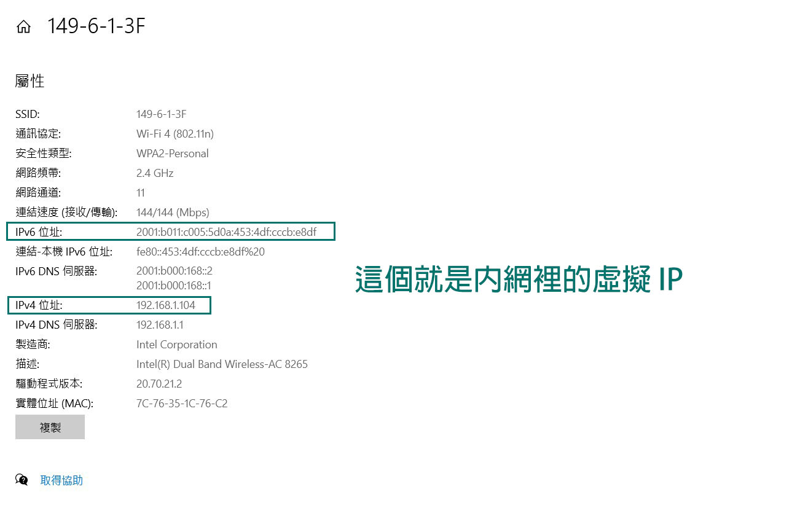
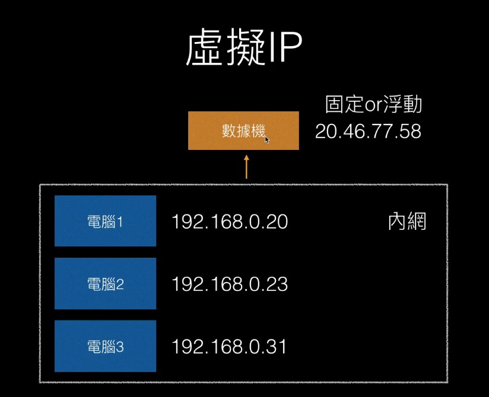

小心我查你 IP。
各種 IP 地址
首先要知道 IP 地址可以分成：
- 虛擬 IP 地址
- 浮動 IP 地址
- 固定 IP 地址
固定 IP 地址
假設有：
- 電腦1 =>
20.241.73.84 - 電腦2 =>
20.241.73.85 - 電腦3 =>
40.13.73.85
當這些 IP 地址「不會變」，而且可以「直接連到那台電腦」，就代表這是固定 IP 地址。
通常是出現在「伺服器」的情況，因為人家要連到你這邊的時候才有辦法知道正確的位置在哪裡。
備註：「直接連到那台電腦」的意思大概是指你可以直接跟那台電腦做互動。像 FTP 就是透過 IP 地址直接連到某台主機，然後你才可以把檔案存到那邊去這樣的概念。而世紀帝國這種需要靠 IP 地址來連線的概念大概也是這樣子吧（我想是這樣子）。
浮動 IP 地址
每一次連接網路的時候 IP 地址都不一樣：
- 電腦1 =>
20.241.73.84 - 電腦1 =>
20.241.73.85 - 電腦1 =>
40.13.73.85
這種 IP 地址「會變來變去」，但是別人還是可以透過這個 IP 地址來直接連到你的電腦。
為什麼要有浮動 IP？
1. 需求性
一般用戶其實不像伺服器一樣需要有固定 IP 地址這種需求，反正真的需要跟朋友連線的時候在貼 IP 地址給對方就好
2. 安全性
如果被駭客發現自己的 IP 地址，下一次連線的時候 IP 地址就不一樣了，比較能降低被攻擊的可能。
虛擬 IP 地址
首先你連到網路（wifi）的時候會產生一個虛擬 IP 地址，像這樣：

所以這個時候就會分成「內網」跟「外網」的概念，像這樣：

簡單來說，連接到「同個網路」的人就代表他們處在「同個內網」，在內網的人都會有一個 虛擬 IP 地址，像上面的 192.168.0.20。而外網的部分則是「數據機」，代表「實際對外公開的 IP」。
舉個例子，假設你連到 google，那 google 的伺服器會看到你顯示的 IP 地址是對外公開的那個 20.46.77.58，而不是 192.168.0.20。
別人是沒有辦法透過虛擬 IP 地址來跟你連線的，只有處在同個內網（連同個 wifi）的人可以直接連接到彼此的電腦，像上面圖中的 電腦1 就可以連到 電腦2，電腦2 可以連到 電腦3，以此類推。
另外還有一個很重要的觀念：虛擬 IP 地址是可以重複的
例如說你在你家內網的虛擬 IP 地址可能是 192.168.0.20，別人在他家內網的虛擬 IP 地址也可以是 192.168.0.20。所以「同個 IP 不代表是同一台電腦」，有可能只是不同內網裡的電腦罷了。
其實仔細想想也合理，畢竟每個人家都有一個真正對外公開的 IP 地址，所以內網裡面重複也沒什麼好奇怪的，反正別人又沒辦法透過虛擬 IP 地址來跟你連線。
那實際要跟別人連線怎麼做？
其實就是透過「數據機」來做到，你想連線到外面（例如 google）來取得網頁資料，那就透過數據機對外公開的 IP 地址來跟 google 的伺服器溝通，接著數據機在把資料丟回來給內網裡的電腦。
參考這個流程：
192.168.0.20（電腦1）跟20.46.77.58（數據機）說「我想要造訪 google.com」20.46.77.58（數據機）跟172.217.160.110（google 主機）說「我想要造訪 google.com」- google 主機把 response 傳給數據機
- 數據機再把 response 傳給電腦1
為什麼要有虛擬 IP 地址？有什麼好處？
1. 需求性
一般用戶其實大多數情況不需要有固定的 IP 地址，因為沒什麼機會用到（跟別人直接連線）。
2. 節省資源
電信商不用給每台電腦分配一個固定 IP 地址，只要分配給數據機就好。